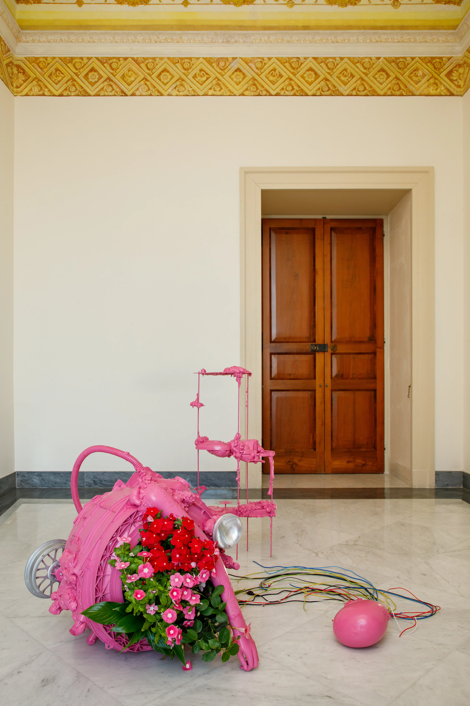

Dream Of A Synthetic Body#3
Iron, plastic, bone, lace, aluminum, steel, flowers, water-based enamel, plants, 150 x 180 x 150 cm, 2022Ferro, plastica, osso, pizzo, alluminio, acciaio, fiori, smalto a base d'acqua, piante, 150 x 180 x 150 cm, 2022
An installation made with diverse materials that addresses the concept of the relationship between body and machine. What are the political, ethical, social, and aesthetic limits of the body? Contemporary culture has shifted the focus of the hybridization of the body from high-tech laboratories to popular culture. Science fiction, horror literature, and cinema contribute to this theme, emphasizing their ability to record and represent the changes in our lives. The consolidated success of horror and science fiction genres is symptomatic of a new phenomenon that favors the deviant, or the mutant, over more conventional versions of the human being. Precisely for this reason, they provide us with cultural representations appropriate to these changes and transformations. Dream of a Synthetic Body is an attempt to penetrate this rotten imagery, in which the beauty of the anomalous body is oriented toward a representation of the subject within the unity of the body-machine.Installazione realizzata con materiali diversi che affronta il concetto di relazione tra corpo e macchina. Quali sono i limiti politici, etici, sociali ed estetici del corpo? La cultura contemporanea ha spostato il focus dell'ibridazione del corpo dai laboratori high-tech alla cultura popolare. Fantascienza, letteratura horror e cinema contribuiscono a sviluppare questo tema, sottolineando la loro capacità di registrare e rappresentare i cambiamenti nelle nostre vite. Il consolidato successo dei generi horror e fantascienza è sintomo di un nuovo fenomeno che preferisce il deviante, o il mutante, alle versioni più convenzionali dell'essere umano. Proprio per questo motivo ci forniscono rappresentazioni culturali adeguate a questi cambiamenti e trasformazioni. Dream of a synthetic body è il tentativo di penetrare l'immaginario putrefatto, in cui la bellezza del corpo anomalo si orienta verso una rappresentazione del soggetto nell'unità del corpo-macchina.